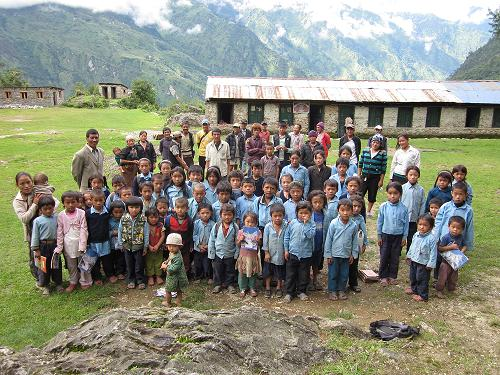

NAMASTEE!
नमस्ते
Herzlich willkommen auf der Homepage der
"FRIENDS OF CHEPEL e.V."
Eastern Nepal, Solukhumbu, Sagarmatha
NEUIGKEITEN
17.01.2013: CHEPEL IM RADIO
Am 08.12.2013 wird der Verein "Friends of Chepel e.V." im Radio vorgestellt,
und zwar in der Sendung "MEIN ABENTEUER" mit Reiner Moitsch in Radio RPR1 von 10 - 12 Uhr!
03.01.2013: EINE BRÜCKE FÜR CHEPEL
Ein im Raum Karlsruhe ansässiges Unternehmen hat den Bau einer Stahlbrücke für Chepel
angekündigt und würde diese Brücke nach Maßgabe aus Chepel kostenfrei zur Verfügung stellen.
Neben vielen zu klärenden Punkten steht als wesentlicher Punkt die Frage im Raum,
WIE DIE BRÜCKE VON KARLSRUHE NACH KATHMANDU gelangen kann.
Per Luftfracht, per See-und Landweg?
Natürlich soll der Transport so wenig wie möglich oder am besten gar nichts kosten.
Nach einer Möglichkeit hierfür wird jetzt besucht.
Wer eine Idee oder einen Kontakt oder einen Tipp hat: BITTE MELDEN!!
info@friends-of-chepel.de
Als gemeinnützig anerkannt vom Finanzamt Bensheim, Steuernummer: 005 250 58699
Eingetragen ins Vereinsregister beim Amtsgericht Darmstadt, Reg.blatt 83274